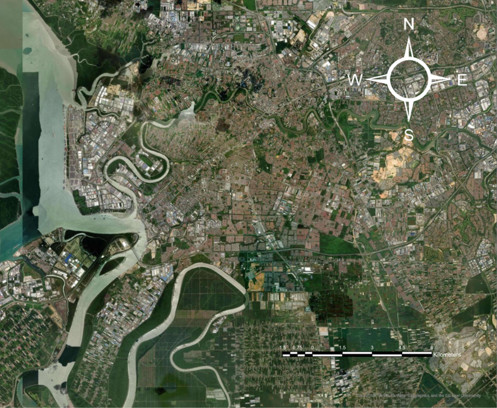
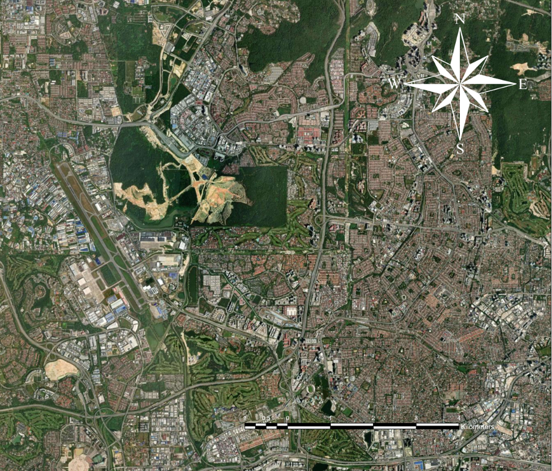
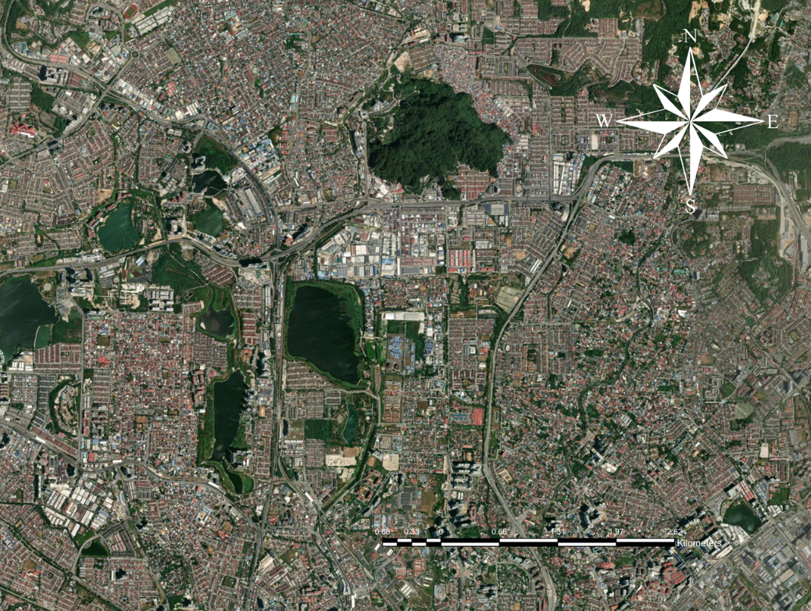
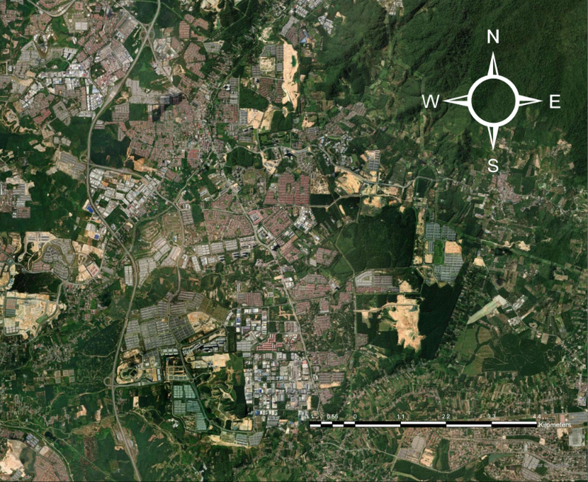
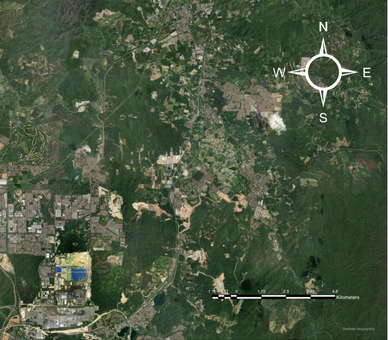
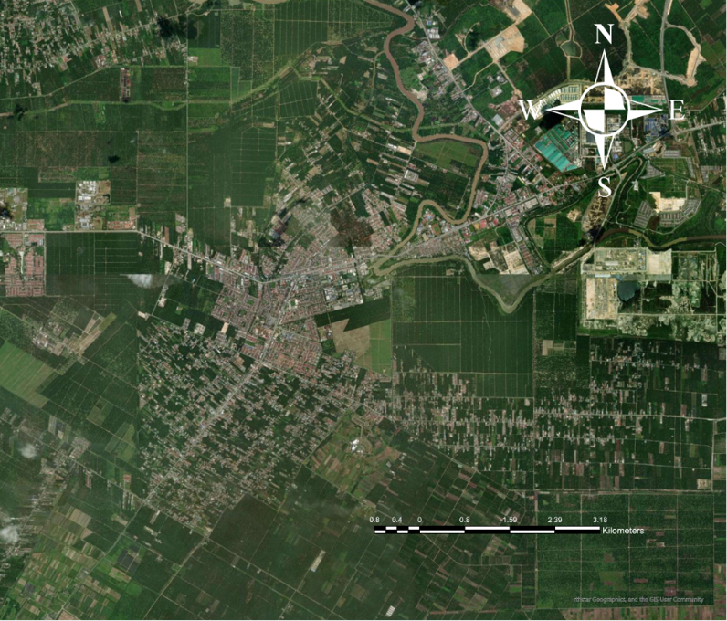
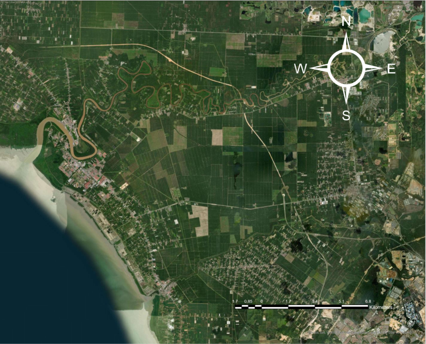

The flood risk classification was generated using a weighted overlay analysis approach based on environmental factors affecting flood occurrence.
The analysis classified the study area into five risk categories: Very High, High, Moderate, Low, and Very Low.
The largest area is classified as Low Risk (47.38%), followed by Moderate Risk (39.13%).
Slope classification analysis was generated based on the reclassification of slope data to identify its influence towards flood susceptibility.
The slope factor was classified into five risk categories: Very High, High, Moderate, Low and Very Low.
Based on the result, most of the study area is classified as Very Low Risk (99.43%). This indicates that the slope factor has a lower contribution towards flood susceptibility.
Gentle slope areas have higher potential for water accumulation, while steeper slopes allow faster surface runoff movement.
Soil type classification was included in the flood susceptibility analysis because soil characteristics influence infiltration capacity and water accumulation.
The soil layer was classified into four categories: Clay, Fine Texture, Loam and Sand.
Clay soil has lower infiltration capacity which allows water to accumulate easily, resulting in higher flood susceptibility. Meanwhile, sandy soil allows faster infiltration and reduces flood potential.
The reclassified soil type layer was used as one of the environmental factors in the weighted overlay analysis.
Drainage distance was included in the flood susceptibility analysis because areas located nearer to rivers and drainage networks have a greater probability of flooding during heavy rainfall events.
The drainage distance layer was classified into five categories: Very High, High, Moderate, Low and Very Low.
Based on the analysis, the largest portion of the study area falls under the Low Risk (34.72%) category, followed by Moderate Risk (27.85%).
Areas located very close to drainage channels have higher flood susceptibility, while locations farther from drainage systems generally experience lower flood risk.

Klang District is located on the western coast of Selangor and is traversed by the Klang River. Extensive urban development, relatively flat topography and its close proximity to major river systems increase the district's susceptibility to flooding, particularly during periods of prolonged or intense rainfall.
Based on the GIS Weighted Overlay Analysis, Klang District is predominantly classified as Moderate Flood Risk, accounting for approximately 88.35% of the total analysed area. The remaining area consists of Low Flood Risk (9.41%) and High Flood Risk (2.24%). No areas were classified as Very Low Flood Risk or Very High Flood Risk.
The predominance of Moderate Flood Risk indicates that most parts of Klang District experience a moderate susceptibility to flooding. High Flood Risk zones are mainly concentrated near Sungai Klang and its surrounding river network where low elevation, dense urban development and high rainfall intensity increase flood occurrence. Areas classified as Low Flood Risk are generally located farther from major rivers or on slightly higher terrain.
Flood susceptibility was assessed using a GIS Weighted Overlay Analysis by integrating four major conditioning factors: rainfall, slope, soil type and distance to river. Each factor was assigned a relative weight according to its contribution to flood occurrence. The combined weighted values were subsequently classified into five flood susceptibility classes: Very Low, Low, Moderate, High and Very High Flood Risk. This approach enables a reliable spatial assessment of flood susceptibility throughout Klang District.
Tehrany, M. S., Pradhan, B., & Jebur, M. N. (2015). Flood susceptibility mapping using a novel ensemble weights-of-evidence and support vector machine models in GIS. Journal of Hydrology.

Petaling District is one of the most urbanised districts in Selangor, encompassing major cities such as Shah Alam, Subang Jaya and Petaling Jaya. Rapid urbanisation, dense residential development and extensive drainage networks contribute to varying levels of flood susceptibility across the district.
Based on the GIS Weighted Overlay Analysis, Petaling District is predominantly classified as Moderate Flood Risk, accounting for approximately 96.22% of the analysed area. Areas classified as Low Flood Risk represent 3.75%, while only 0.03% falls under the Very Low Flood Risk category. No locations were classified as High or Very High Flood Risk. These findings indicate that most parts of Petaling District possess a moderate susceptibility to flooding, mainly due to urban development, relatively flat terrain, rainfall intensity and proximity to local drainage systems.
Flood susceptibility was assessed using the GIS Weighted Overlay Analysis by integrating four major conditioning factors: rainfall, slope, soil type and distance to river. Each factor was assigned a relative weight according to its contribution to flood occurrence. The combined weighted values were classified into five flood susceptibility classes: Very Low, Low, Moderate, High and Very High Flood Risk. This approach provides a scientifically reliable representation of flood susceptibility across Petaling District.
Tehrany, M.S., Pradhan, B. & Jebur, M.N. (2015).

Gombak District is situated in the northern part of Selangor and consists of rapidly developing urban areas together with hilly terrain. The combination of urban expansion, rainfall intensity and river systems contributes to varying levels of flood susceptibility throughout the district.
Based on the GIS Weighted Overlay Analysis, Gombak District is predominantly classified as Moderate Flood Risk, representing approximately 96.65% of the analysed area. Areas classified as Low Flood Risk account for 2.18%, while High Flood Risk and Very High Flood Risk contribute 0.85% and 0.32%, respectively. No areas were classified as Very Low Flood Risk. Overall, the GIS analysis indicates that most parts of Gombak District exhibit moderate flood susceptibility, influenced by rainfall distribution, terrain conditions, soil characteristics and proximity to river networks.
Flood susceptibility was evaluated using the GIS Weighted Overlay Analysis by integrating rainfall, slope, soil type and distance to river. Each factor was assigned an appropriate weight according to its contribution to flood occurrence. The combined weighted values were subsequently classified into five flood susceptibility classes ranging from Very Low to Very High Flood Risk. This method provides a scientifically reliable representation of spatial flood susceptibility across Gombak District.
Tehrany, M.S., Pradhan, B. & Jebur, M.N. (2015).

Hulu Langat District is situated in the eastern part of Selangor and consists of rapidly developing urban centres, residential areas and extensive river networks. Increasing urbanisation, seasonal heavy rainfall and river proximity contribute to flood susceptibility in several parts of the district.
Based on the GIS Weighted Overlay Analysis, Hulu Langat District is predominantly classified as Moderate Flood Risk, accounting for approximately 91.48% of the total analysed area. Areas classified as Low Flood Risk represent 7.06%, while High Flood Risk accounts for 1.46% of the district. No areas were classified as Very High or Very Low Flood Risk. The predominance of Moderate Flood Risk reflects the influence of urban development, moderate terrain conditions and extensive river systems throughout Hulu Langat. Higher flood susceptibility mainly occurs in areas located close to river corridors where rainfall accumulation and river proximity significantly increase flood occurrence.
Flood susceptibility was assessed using a GIS Weighted Overlay Analysis by integrating four conditioning factors: rainfall, slope, soil type and distance to river. Each factor was assigned an appropriate weight according to its contribution to flood occurrence. The combined weighted values were subsequently classified into five flood susceptibility classes: Very Low, Low, Moderate, High and Very High Flood Risk. This GIS-based approach provides a reliable representation of spatial flood susceptibility and supports effective flood risk management within Hulu Langat District.
Tehrany, M.S., Pradhan, B. & Jebur, M.N. (2015). Flood susceptibility mapping using GIS-based multi-criteria decision analysis and weighted overlay techniques.

Hulu Selangor District is located in the northern part of Selangor and consists of mountainous terrain, agricultural land, forests and growing residential developments. Although much of the district is characterised by moderate flood susceptibility, flood-prone areas remain concentrated along major river systems and low-lying valleys.
Based on the GIS Weighted Overlay Analysis, Hulu Selangor District is predominantly classified as Moderate Flood Risk, covering approximately 75.08% of the total analysed area. High Flood Risk represents 12.68%, while Very High Flood Risk accounts for 6.39%. Low Flood Risk covers 5.84% and Very Low Flood Risk represents only 0.01% of the district. Moderate flood susceptibility is widely distributed throughout Hulu Selangor, whereas High and Very High Flood Risk zones are mainly concentrated near major rivers, floodplains and low-lying settlements where prolonged rainfall and river overflow increase the likelihood of flooding.
Flood susceptibility was evaluated using a GIS Weighted Overlay Analysis by integrating four conditioning factors including rainfall, slope, soil type and distance to river. Each factor was assigned an appropriate weight based on its contribution to flood occurrence. The combined weighted values were classified into five flood susceptibility classes to represent spatial variations in flood risk across Hulu Selangor District and to support flood management planning.
Tehrany, M.S., Pradhan, B. & Jebur, M.N. (2015).

Kuala Langat District is located in the southern part of Selangor and is characterised by coastal plains, agricultural land, mangrove forests and expanding residential developments. The district is influenced by river systems and seasonal monsoon rainfall, which contribute to flood susceptibility in several low-lying areas.
Based on the GIS Weighted Overlay Analysis, Kuala Langat District is predominantly classified as Moderate Flood Risk, accounting for approximately 95.72% of the total analysed area. Areas classified as Low Flood Risk represent 3.74%, while High Flood Risk accounts for only 0.54%. No areas were classified as Very High Flood Risk or Very Low Flood Risk. The dominance of Moderate Flood Risk reflects the district's extensive low-lying terrain, river systems and seasonal rainfall. Localised High Flood Risk zones are primarily concentrated near river corridors and drainage channels where flood occurrence is more likely during prolonged or intense rainfall events.
Flood susceptibility was evaluated using a GIS Weighted Overlay Analysis by integrating four conditioning factors including rainfall, slope, soil type and distance to river. Each factor was assigned an appropriate weight according to its contribution to flood occurrence. The combined weighted values were subsequently classified into five flood susceptibility categories: Very Low, Low, Moderate, High and Very High Flood Risk. This approach provides a reliable spatial representation of flood susceptibility throughout Kuala Langat District.
Tehrany, M.S., Pradhan, B. & Jebur, M.N. (2015).

Kuala Selangor District is located along the north-western coast of Selangor and is characterised by extensive low-lying plains, agricultural land and river networks. The district is highly influenced by river overflow and seasonal monsoon rainfall, making several areas susceptible to flooding.
Based on the GIS Weighted Overlay Analysis, Kuala Selangor District is predominantly classified as Moderate Flood Risk, accounting for approximately 80.64% of the total analysed area. Areas classified as High Flood Risk represent 18.42%, while Very High Flood Risk accounts for 11.58%. Low Flood Risk occupies only 1.24% of the district, whereas no areas were classified as Very Low Flood Risk. The extensive distribution of Moderate Flood Risk reflects the district's low elevation, dense river network and frequent exposure to seasonal rainfall. High and Very High Flood Risk zones are primarily concentrated near river channels and floodplain areas where prolonged rainfall and river overflow significantly increase flood susceptibility.
Flood susceptibility was assessed using a GIS Weighted Overlay Analysis by integrating four conditioning factors including rainfall, slope, soil type and distance to river. Each factor was assigned a relative weight according to its contribution to flood occurrence. The combined weighted values were subsequently classified into five flood susceptibility categories: Very Low, Low, Moderate, High and Very High Flood Risk. This GIS-based assessment provides a reliable representation of spatial flood susceptibility and supports flood risk management within Kuala Selangor District.
Tehrany, M.S., Pradhan, B. & Jebur, M.N. (2015).
Sepang District is located in the southern part of Selangor and is well known for Kuala Lumpur International Airport (KLIA), Sepang International Circuit and rapidly expanding residential and industrial developments. The district contains extensive lowland areas and river networks, making certain locations susceptible to flooding during prolonged rainfall events.
Based on the GIS Weighted Overlay Analysis, Sepang District is predominantly classified as Moderate Flood Risk, accounting for approximately 98.22% of the analysed area. Only 1.19% of the district falls within the High Flood Risk category, while Low Flood Risk represents 0.57% and Very Low Flood Risk accounts for only 0.01%. No areas were classified as Very High Flood Risk.
The predominance of Moderate Flood Risk indicates that most parts of Sepang possess a moderate susceptibility to flooding. Areas exhibiting High Flood Risk are generally associated with low-lying terrain, urban expansion, and locations situated close to rivers and drainage channels. Rainfall intensity, gentle topography and river proximity remain the primary factors influencing flood occurrence throughout the district.
Flood susceptibility in Sepang District was assessed using a GIS Weighted Overlay Analysis by integrating four conditioning factors: rainfall, slope, soil type and distance to river. Each factor was assigned an appropriate weight based on its contribution to flood occurrence. The weighted overlay model subsequently classified flood susceptibility into five categories: Very Low, Low, Moderate, High and Very High Flood Risk. This approach provides a scientifically reliable method for identifying spatial variations in flood susceptibility and supports effective flood risk management within Sepang District.
Tehrany, M.S., Pradhan, B. & Jebur, M.N. (2015). GIS-based flood susceptibility mapping using weighted overlay techniques for spatial flood risk assessment.